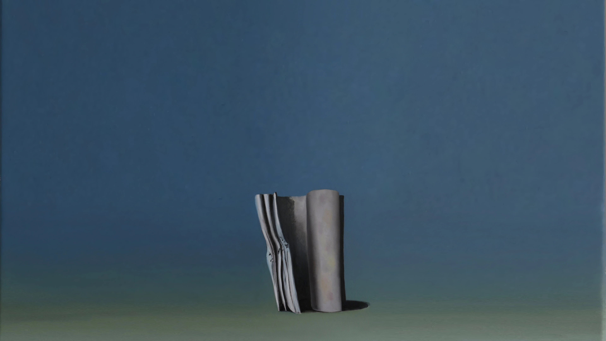
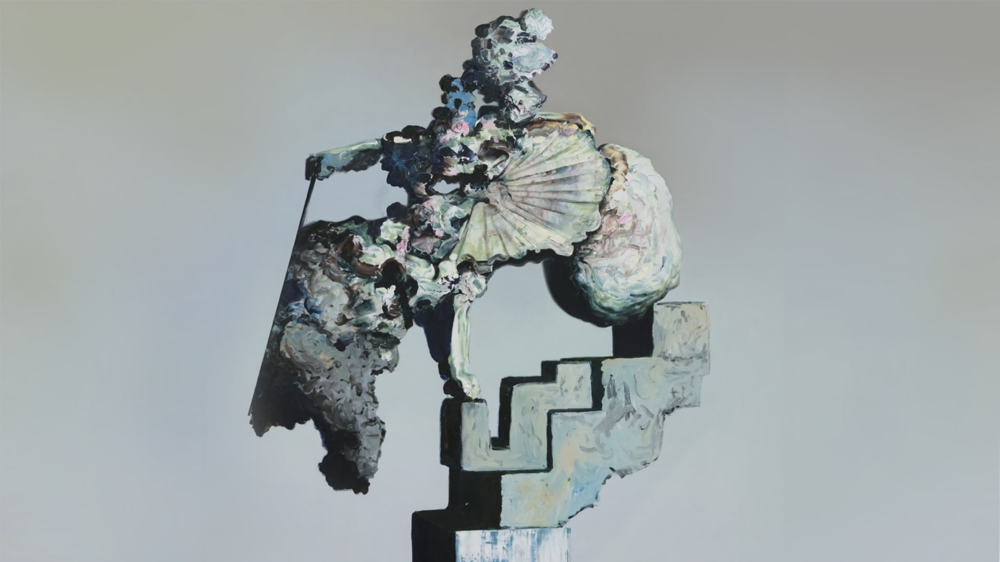

Plane wave expansion methods in
2D photonic crystal
Plane wave expansion methods for the determination of the electromagnetic modes and dispersion relations of a 2D photonic crystal.
Condensed Matter Theoretical Physicist
currently at ICMM - CSIC

Quantum Dynamics of Materials (QUDYMA)
Greetings! I'm Francisco Lobo from Portugal. I was born and raised in Guimarães but later moved to the Invicta city, Porto. I obtained both my bachelor's and master's degree in Physics at the University of Minho in Braga, Portugal. I'm also a vivid enjoyer of Ben 10.
I'm currently a PhD student in the "Quantum Dynamics of Materials" team under the supervision of Pablo San-José at ICMM. I'm working within the field of many-body atosecond physics, devoted to understanding quantum materials and their response when driven out of equilibrium. At the moment, I'm dealing with self-consistent Majorana physics in 1D nanowire systems.
Compilation of notes I wrote on various topics, ranging from simple exercises to detailed state of art calculations. It may be useful to others, but please note that it is not peer-reviewed and will certainly contain errors. Keep here as safekeeping.

Plane wave expansion methods for the determination of the electromagnetic modes and dispersion relations of a 2D photonic crystal.

Dyadic Green's functions methods to calculate the Purcell factor of a dipole line a laser cavity.
Linear response of an interacting many-body system at 0K from a time-dependent Hartree-Fock mean-field theory as a generalized eigen-problem of the effective two-particle Hamiltonian of the electron-hole interaction.
General Hartree-Fock decoupling of a quartic Hamiltonian accounting for superconductivity in a Nambu-spinor scheme. Mean-field self-energy as a spin-1/2 Hubbard term in the Wannier limit.

Basic review on bound- and edge-states physics on a 1D semiconducting nanowire in the proximity of a intrinsic superconductor.